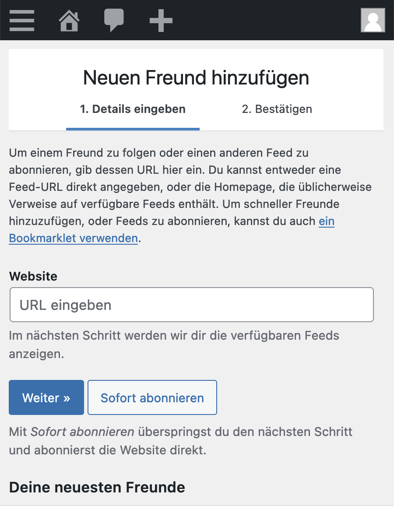
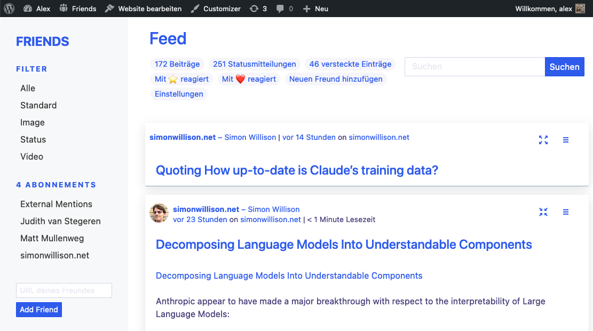

Friends
- Entstand 2018
- Private Blogbeiträge mit Freunden teilen
- Direkte Vernetzung von WordPress Blogs
- Vertrauensbasis
- Kommentieren ohne Spamfilter

Friends
Alles auf meinem Blog: Lesen und Publizieren

Schwierigkeiten von Friends
- Zu WordPress-Ökosystem lastig
- Discovery-Probleme: wer hat das Plugin installiert?
- Immer weniger Leute haben Blogs